이 영상이 하려는 말: "영화로 볼 땐 별거 아니던 백룸에 겁 많은 김실버가 직접 들어가, 무서움이 사라지지 않는 채로 적응해버리는 공포 체험기" 3막 구조: 1막 허세(호기심→첫 붕괴) → 2막 붕괴(비명·자백·추격·규칙학습) → 3막 무서운 채 적응(수용→근성→아이러니 퇴장) 사용법: 각 카드에서 ▶ 재생으로 실제 음성(리액션)을 듣고, 프레임과 자막으로 장면을 확인한 뒤 결정을 선택하세요.
선택은 자동 저장됩니다. 다 끝나면 맨 아래 결정 내보내기를 눌러 나온 텍스트를 Claude에게 붙여넣거나 파일로 저장하세요. 이미 결정된 것: 인트로는 콜드오픈(추격·비명·붙잡힘 프리뷰) 사용 — C09에서 발췌.
C01 · 1막 · 동기·셋업 · 00:30–02:06 (96초)
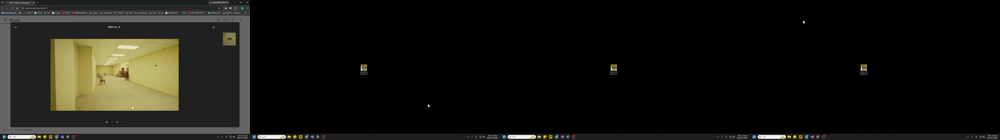
AI 추천: 대표(강한 압축) 왜 이 게임인지 설명. 화면이 바탕화면·브라우저뿐이라 90초→20초 수준 압축 권장
00:34 반갑습니다 김실버 입니다 오늘 해볼 게임은 내가 최근에 이 영화 백룸에 대해서 아니지
00:42 이 영화 백룸을 시청을 하고 왔어요 그래서 이 백룸이 원래 게임이 먼저 있었더라구요
00:53 약간 원작이라고 해야 될까요 원작이 되는 게임이 있더라구요
01:01 사실 영화 백룸의 원작은 유튜브에서 시작했던 시리즈인 것 같지만 백룸이라는 게임이 궁금해졌고
01:15 백룸이라는 리미널 스페이스에 대한 공간에 대한 궁금증이 조금 생겼습니다 일종의 도시계담 같은거긴 한데 뭐 어쨌든 궁금해졌고
01:32 게임을 한번 해보려고 가져와 봤습니다 잠시만요 그래서 이제 어두운 방에서 저 혼자 이 게임을 할 거구요 아 이거 무서울 것 같은데
01:57 최대한 주변을 어둡게 해두고 게임을 진행해 보려고 합니다
02:06 한번 해볼게요
C02 · 1막 · 공포 예열 · 03:10–03:45 (35초)
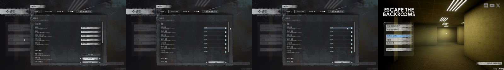
AI 추천: 예비 시작 전부터 쫄보 증명. C03과 기능 겹침 — 하나만 있어도 충분
03:12 나 되게 무서운 문구를 본 것 같아 아 이거 사운드 왜 이래
03:16 잠깐만 사운드 너무 무섭잖아
03:27 아 내가 듣는 소리를 줄여야겠구나
03:41 어 개무서워 아 사운드 괜찮나요 보고계시는 분 혹시 없나요
C03 · 1막 · 공포증거(노크) · 10:05–10:55 (50초)
AI 추천: 대표 '누가 똑똑거렸어요…살려줘' + 전체 최대급 오디오 피크(10:30). 1막 공포 상승의 축
10:06 기침 소리가 났는데 아닌가
10:12 아 개 무서워 어 누가 똑똑거렸어요
10:24 누가 똑똑거렸어요 누가 똑똑거렸어 저만 들었어요
10:39 살려줘
10:46 야 뭐야 아 나 잠깐만 나 닭살 뜯었어 지금
10:53 나 저런 애랑 이제 숨바꼭질 하면서 여기를 깨야 되는 거예요
C04 · 1막 · 공포증거(현실) · 12:07–12:40 (33초)
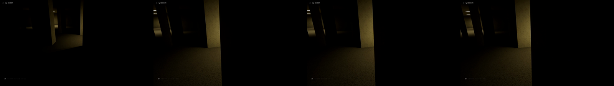
AI 추천: 예비 현실 핸드폰 점등 사건. 화면 증거가 없어 자막 연출 없이는 전달 불가
12:07 나 너무 무서운데 이거 스테이지 1에서 그냥 끝낼 것 같은데요 저
12:13 어떡하죠
12:16 아 근데 갑자기 핸드폰에 왜 불이 들어오냐 핸드폰이 왜 갑자기 켜지냐 켜지는 거야 꺼지는
12:26 거야 아 나 무섭네 나 무섭네 공기계가 제가 책상 안쪽에 공기가 있는데 갑자기 핸드폰이
12:34 화면이 막 하얘지면서 화면이 들어왔어요 아 근데 이 소리 좀 어떻게 안 되나 괴물이 아까 저기 있었죠 괴물이 아까 저기 있었는데 저기면 안 가면 돼
C05 · 1막 · 첫 붕괴+허세 · 13:55–14:45 (50초)
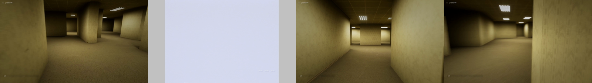
AI 추천: 대표 첫 사망(파란 화면)+찐비명→'적응했습니다 별거 아니네'. 허세 패턴의 시작점
14:06 어 문이다 어 나 소리 질렀어 너무 찐텐으로 아 이렇게 되는구만 이제 적응 했습니다
14:20 적응했습니다 별거 아니네 뭐 게임 다시 하면 되는거지 개쫄았네 고무줄이요 고무줄처럼 생겼어요
14:40 저 사실 개쫄아가지고 제대로 보지도 못했어요 그냥 뛰는 건 좀 아껴놔야 될 것 같은데 아니 사다리를 찾아서 도망가라잖아요 나가라잖아요
C06 · 2막 · 자각(핵심) · 18:10–19:30 (80초)
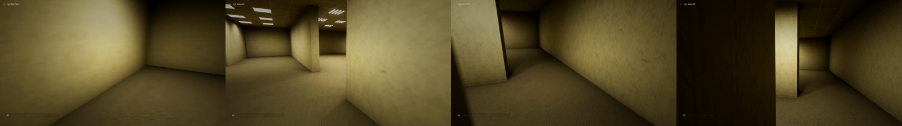
AI 추천: 대표 대형 비명(18:29)→'이게 영화라서 평온하게 볼 수 있었던거네'. 컨트롤링 아이디어의 축
18:13 전자레인지 소리만 어떻게 안되나 아 나 이런 소리 좀 안났으면 좋겠어
18:22 안녕하세요 실바님 반갑습니다 아니 방금 문 두드리는 소리만
18:47 오오오오오오오오오오오오오오오오오오오
19:06 하 하 하 하 하 하 하 하 하 하 하 하 하 하 하 하 하 하 하 하 하 하
19:18 하 하 하 하 하 하 하 하 하 하 하 하 하 와 이게 영화라서 내가 평온하게 볼 수 있었던거네
19:27 이 세계 안에 들어오면 절대 평온할 수가 없네요 와 근데 소리지르고 달려오는
C07 · 2막 · 허세 자백 · 20:50–21:35 (45초)
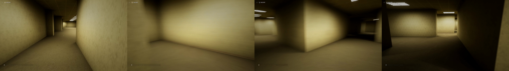
AI 추천: 대표 '별거 아니네 이러면서…이렇게 무서운건지 몰랐어'+'몸이 바들바들'. 대사만으로 성립
20:54 아니 나 영화 뺏는 보고 어 뭐야 저거 뭐 리미널 스페이스 뭐 별거 아니네 막 이러면서
21:00 아 씨 간도 크게 아 씨 뺏는 게임 해봐야지 벌써 시작했는데
21:07 나 이렇게 무서운건지 몰랐어 잠깐만 흐흐흐흐흐 나 개쫄려
21:20 문 어딨어 문 어딨어 제가 마우스 떨리는거 보이세요 나 죽겠네 지금 진짜 바들바들 떨려 몸이 바들바들 떨려요 개 무서워
21:33 하 어 여기 아까 첫번째 시작했던데 나 그죠 어 이제 약간 방구조가 약간 머리에 들어오기 시작했어요 아까 그러면 이쪽으로 갔을 아닌데
C08 · 2막 · 자기설득 실패 · 22:20–24:10 (110초)
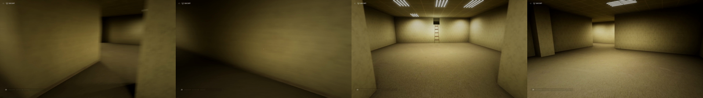
AI 추천: 대표 '쫄지마 NPC일 뿐이야'→'무서운건 무서운거지'. 적응 시도의 1차 실패
22:28 아 다 구했는데 열쇠 구했는데
22:32 하 잠깐만 열쇠 없어졌겠지 아 씨 아 이제 적응했어 아 적응했습니다
22:44 저 맨 처음에 저 괴물 만났을때 소리지르면서 도망갔거든요 이제 차분하게 할 수 있을 것 같아요 차분하게
22:56 제 스스로에게 마법의 주문을 걸면서 차분하게 한 번 깨보겠습니다 차분하게 깨자 그럼 싫어?
23:05 꿀지마 어차피 상대방은 게임속 NPC일 뿐이야 꿀지마 현실을 찾았게
23:17 발견만 빨리하고 아 근데 나 아까 방향을 왜 잘못 도망갔지 바로 뒤도 도망갔으면 됐는데 어? 아 이게 게임을 진행하고 있던 상황은 저장이 되나봐요
23:33 그럼 열쇠도 내가 들고 있단 소리야? 근데 인벤톨이 없는데 열쇠가
23:39 이건 좀 불편하네 이 게임이 어디까지 진행됐는지를 내가 알 수가 없네요
23:44 일단은 그래도 그 진행한거는 유지를 해주나봐요 이제 그 문만 찾으면 되겠다
23:54 김시복 쏠지마 쏠지마 NPC야 어?
24:06 나 무서운거 어떡해 무서운건 무서운거지
C09 · 2막 · 추격+착하게살게요 · 34:40–37:44 (184초)
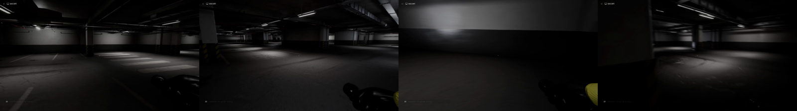
AI 추천: 대표(최우선) 최대 하이라이트. 추격→'착하게 살게요 진짜로!'→안도. 콜드오픈 소재로도 사용(승인됨)
34:42 지나갔나?
34:44 아 나 봤어! 쟤가 나 봤어!
34:56 야 따라온다 야 여기서 멈추면 어떡해 뛰어 뛰어! 뛰어!
35:02 너 죽어 뛰어 빨리 잠깐만 일단 뛰어 괜찮아 괜찮아 괜찮을거야 그래 다 돌렸죠?
35:19 잠깐만 이거 게임인거 아는데도 무섭다 아 저기있어!
35:26 저기있어!
35:34 미치겠네 진짜
35:40 아니 개무서워요 양팔 양쪽으로 벌리고 막 미친듯이 달려와
35:44 그 약간 워익 워익 보는거 같아요 워익 공 보는거 같아요 왜 안오겠지?
35:54 돌렸겠지?
35:59 아니 문이 열려있냐?
36:03 여기 들어갔다 왔구나 아 잠깐만 아 쫄린다 진짜 열쇠만 모으면 되나?
36:22 아니 이게 지하주차장이 생각보다 개방되어있어서 눈만 마주치면 멀리에서 미친듯이 그냥 막 뛰어와요 야 저 뛰어오잖아 또!
36:33 아 여기 막다른 곳이야 아 잠깐만 망했어!
36:36 조졌어!
36:40 아... 조졌어... 막다른 곳이였어 하필이면
36:45 아 조졌어 나 따라온다 스테미는 다 떨어질 때 됐는데?
36:53 잠깐만... 잠깐만요... 착하게 살게요...
36:57 착하게 살게요... 저 착하게 살게요 진짜로 착하게 살게요!
37:05 잠깐만요... 어허허허허허... 잠깐만요...
37:19 하하하하 왜 안가 왜 안사라져
37:24 왜 이렇게 잘 따라오는거야 숨어봐 이러면 죽냐?
37:29 들어오냐?
37:33 하... 아 문을 열고 오진 않네 하...
37:41 하... 하...
37:44 하... 야 아몬드물 좀 먹어보자
C10 · 2막 · 규칙학습(문) · 38:10–39:20 (70초)
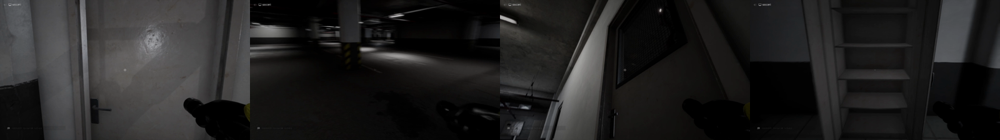
AI 추천: 대표 '문 닫으면 못들어오네 별거 아니네'+창살 너머 관찰 화면. 적응의 근거
38:08 갔냐?
38:10 하하하...
38:14 안갔어 아이씨 뭐야...
38:18 문 닫으면 못들어오네 별거 아니네
38:32 눈만 안 마주치면 되는거 아냐?
38:47 아 마주쳤어 설마요?
38:53 뭐? 뭐?
38:56 범벼 범벼 너 못들어오잖아 뭐 범벼봐 인식도 못하죠?
39:02 NPC 수준? 쭛쭈?
39:06 아 근데 무서워
39:08 빨리 가
39:11 빨리 가 이제 대충 알았어요 이제
39:15 인식을 못하네 문 닫으면 아무것도 못하죠?
C11 · 2막 · 규칙학습(빼꼼) · 43:00–43:40 (40초)
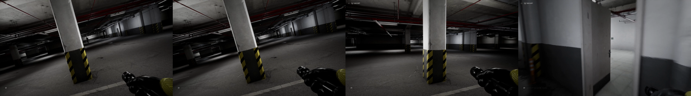
AI 추천: 예비 '빼꼼은 인식을 못하네'. C10과 기능 중복이라 예비
42:58 잠깐 벽뒤에 몸을 숨기고 못 봤나?
43:04 근데 왜 이쪽으로 오지?
43:09 못봤지? 아 빼꼼은 못보는구나
43:13 빼꼼은 인식을 못하네
43:17 그죠?
43:18 그러네 빼꼼은 괜찮은거네 아 근데 왜 이쪽으로 와?
43:23 아 큰일났네 저 죽어요 님들아 반대쪽으로 뛰쳐가기?
43:29 여기 문이 있다고 문이 있다고 문이 있다고 문이 있다고
43:33 또다시 문을 닫으면 되는데
C12 · 2막 · 시청자 공략 개입 · 47:15–48:55 (100초)
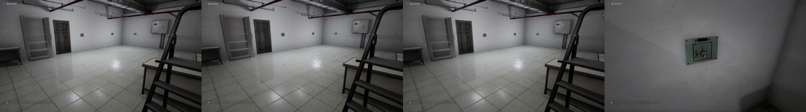
AI 추천: 대표(자막 연출) '살아있는 공략이에요?' 혼자→함께 전환점. 채팅 화면이 없어 재구성 자막 필요
47:12 일단 열쇠 4개는 다 모은 것 같거든요?
47:15 공략 잠깐만 봐 볼게요 근데 뭐 해야 되는 거야?
47:20 escape the back door 아 살아있는 공략이에요?
47:29 잠깐만
47:32 출구를 찾아보세요 근데
47:36 엉?
47:41 어?
47:43 어?
47:45 아니 이거 열쇠 다 모으고 뭐 해야 되는 거지?
47:50 잠깐만요
47:53 레벨
47:56 레벨 1
48:01 열쇠 4개를 다 먹었잖아요 서두면 끝난 거 아니에요?
48:12 동시에 돌리면 문이 열린다고?
48:16 동시에 돌리면?
48:21 근데 열쇠는 다 꽂혀있어요
48:30 바로바로
48:35 아 이게 돌아오는구나 시간이 아 오케이 오케이
48:37 빠르게 아 열렸다 네 열렸습니다
48:45 아이 감사합니다
48:49 살아있는 공략이 많네요
48:53 잠깐만
48:55 어 근데 공략 공략해주시는 분도 등장했으니까 이거 계속해야 되는 거예요?
C13 · 2막 · 공포 재점화 · 50:15–51:10 (55초)
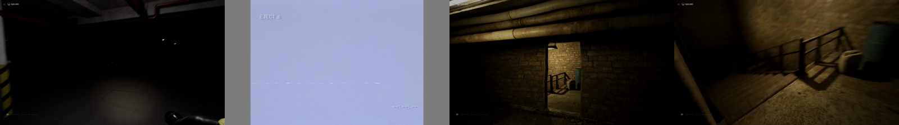
AI 추천: 대표(최우선) 인간형 엔티티 정면(50:23)+비명 피크+직후 사망. 이 영상 최강의 화면 증거